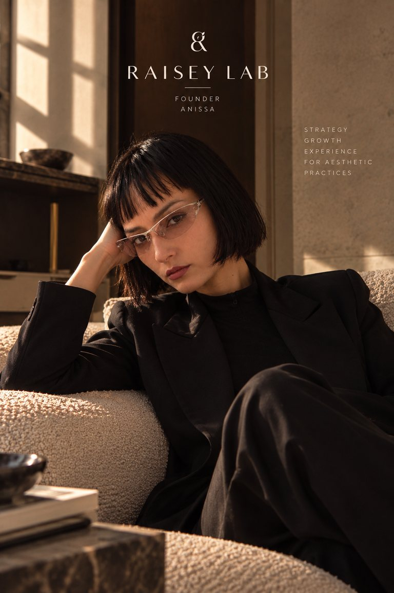

Raisey Lab
Raisey LabInsight 01 · FOUNDER
Why I Created Raisey Lab
A new approach to digital presence in aesthetic medicine.

For years, I worked on the other side of the screen.
At Google, as an Account Manager, I helped brands understand how digital acquisition could become a real business lever: how the right strategy could reach the right audiences and make every investment work harder. It was where I first understood something that has stayed with me ever since.
Digital is not simply about being online. Done well, it accelerates business.
I then moved into agency life, building international strategies for luxury brands. The scale changed, the budgets changed, the markets changed. But one lesson grew sharper: performance alone is never enough. People don’t simply click. They perceive, they compare, they decide whom to trust, and only then do they choose. Brand, image, content, experience and acquisition are not separate subjects. They are parts of the same journey.
Then I entered the world of aesthetic medicine.
An industry I became fascinated by
Aesthetic medicine sits at an unusual intersection of medicine, beauty, science, identity and desire. It is driven by innovation, yet surrounded by regulation, shifting cultural perceptions and subjects that can still feel deeply personal, sometimes even taboo.
Having spent years around beauty and luxury, I understood straight away how much image matters here. What I hadn’t expected was everything that sits behind the image. Behind every clinic is expertise. Behind every doctor is a point of view: a technique, an aesthetic philosophy, a way of treating a face, a particular relationship with ageing, proportion and natural results.
Online, that difference is often invisible.
Choosing a doctor has become a journey
Choosing an aesthetic doctor is rarely a single decision. Someone hears a name from a friend. She searches for it, reads the website, looks at Instagram, listens to how the doctor talks about aesthetics, and compares. Somewhere along the way she begins to answer a more important question: is this the right person for me?
More and more, that question is answered before any consultation, a shift I look at more closely in Your Patient Has Already Met You. It means digital presence is no longer just a marketing channel. It has become part of how trust is built.
Different patients, different philosophies
Aesthetic medicine is changing too. Its vocabulary now reaches beyond transformation towards natural-looking results, skin quality, prevention and longevity. Patients respond to different philosophies. One wants subtle rejuvenation. Another is curious about regenerative approaches. Another is looking for a doctor known for a specific technique. Another simply wants to know she will still look like herself.
A clinic cannot speak to all of them in the same way. Its positioning, its editorial choices and its digital experience all shape the opinion someone forms long before she becomes a patient.
Visibility is not vanity
For a long time, reputation and word of mouth were enough to build a successful practice. They remain invaluable. But the ecosystem around them has grown more complex, and expertise now also needs to be discoverable.
Being visible online doesn’t mean becoming an influencer, speaking more loudly, or turning medicine into a consumer product. It means making your expertise understandable to the people who are already looking for it. Done well, a digital presence lets a doctor share a philosophy, demonstrate expertise and educate patients far beyond the walls of the practice.
Visibility gives expertise somewhere to exist online.
Why Raisey Lab
Looking back, each chapter of my career taught me part of the same lesson. Google taught me performance. Luxury taught me perception. Aesthetic medicine taught me trust.
Raisey Lab sits where the three meet. It is not another social media agency, and its purpose is not to make clinics “look better” online. It works on the whole presence around a practice: brand, digital experience, acquisition, content, patient journey and growth.
The strongest practices need more than visibility. They need to be understood and trusted, and when the right patient starts looking, they need to be there.